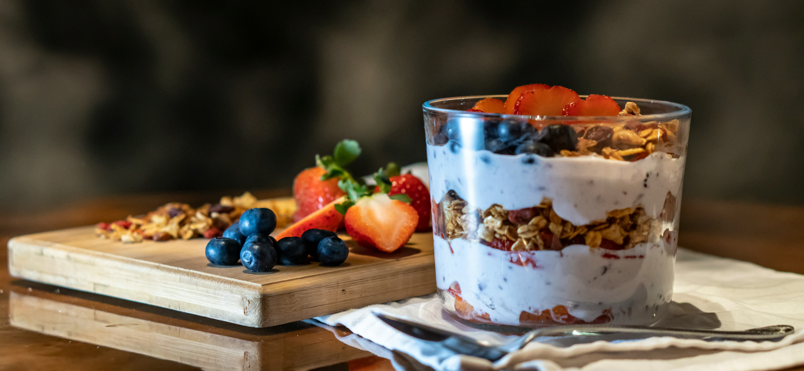

A Greek Yogurt Parfait is a simple and nutritious breakfast made by layering creamy Greek yogurt with fresh fruit and crunchy granola. Rich in protein and naturally sweetened with fruit and honey, it is a refreshing, no-cook meal that can be prepared in just a few minutes. Perfect for busy mornings, this parfait offers a balance of flavor, texture, and nutrition.